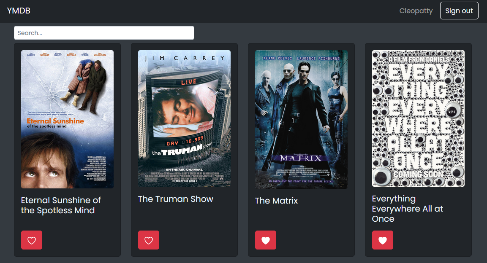

Work
Meet Again
A progressive web app to find tech events in your local area.
I built this app as part of a full-stack web development course with CareerFoundry.
It helped me develop my skills in React and JavaScript, and introduced me to test-driven-development, serverless functions, OAuth authentication, and Tailwindcss.
YMDB (Angular)
A new frontend, this time in Angular, for a web app to search movies, view their details, and save them for later.
I built this app as part of a full-stack web development course with CareerFoundry.
This project uses the same API as the React frontend, but is built in Angular. It introduced me to Angular, TypeScript, and Angular Material.
YMDB (React)
A web app to search movies, view their details, and save them for later.
I built this app as part of a full-stack web development course with CareerFoundry.
This project introduced me to React, Node.js, MongoDB, and Heroku. It was the first time I'd written my own API. It also uses React Bootstrap, Redux, and Netlify.
Chatter

A single-room cross-platform chat app.
I built this app as part of a full-stack web development course with CareerFoundry.
This project introduced me to React Native, Expo, and Firebase.
Pokédex

A web app to search through a list of pokémon and view their details.
This was one of the first projects I completed as part of a full-stack web development course with CareerFoundry.
It helped me develop my skills in JavaScript and Bootstrap. It was also the first time I'd worked with a 3rd-party API, which was fun.
Sunburst Smorgasbord
A relationship anarchy smorgasbord in the style of a coffee flavour wheel.
This was the first project I really used JavaScript in. I'm still involved in updating and improving it.
Artificial Artist
A website to generate art using AI and have it printed out.
I was involved in an early iteration of the website, and continued to work on content and strategy.
SumOne
An information management system for hospitals.
I was a project founder and worked mostly on UX, marketing, website, and business operations.